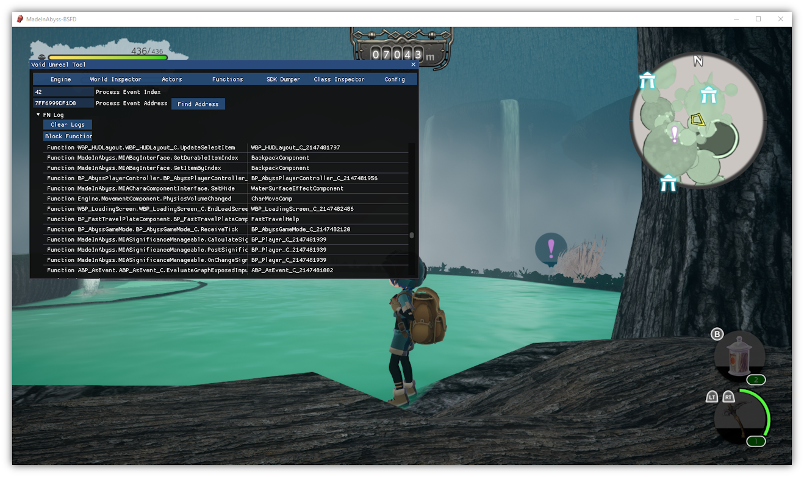

Log Called Functions
This will allow you to see what functions are being called in real time.

Note: In my experience, unfortunately it doesn't log all functions, but still it's a good help. If you don't trust the output of the logs then doing the good ol' RegisterHook on the function and then printing should do the trick.
Setup
- Get Universal Unreal Engine 4 Unlocker (UUU). The latest version (3.0.21) should be fine.
- Get UE Multitool. You have to register to download files from this forum.
- Start the game.
- After starting the game, start UUU.
- Select the game (
MadeInAbyss-Win64-Shipping.exe) as the process to inject to, and the UE Multitool dll (void_unrealtool_[unknowncheats.me]_.dll) as the DLL to inject. - Hit Inject DLL. A command prompt will pop up, and UE Multitool will appear in-game.
- Within the window in-game, hit Find Engine. Three more fields and buttons will pop up. Also hit Find Names, Find Objects, and Find World. This will populate the fields with addresses. Hit Initialize.
- Go to the Functions tab.
- Change Process Event Index to 42.
- Click Find Address.
- Click Hook.
- Now you're done! The functions will appear on the FN Log.